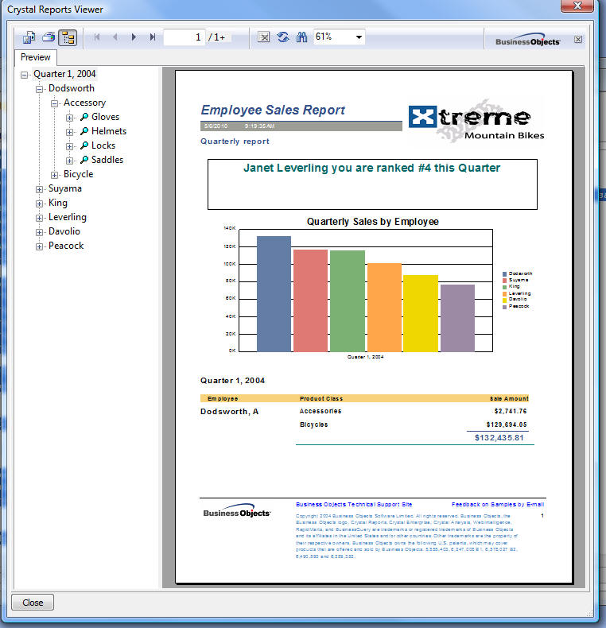
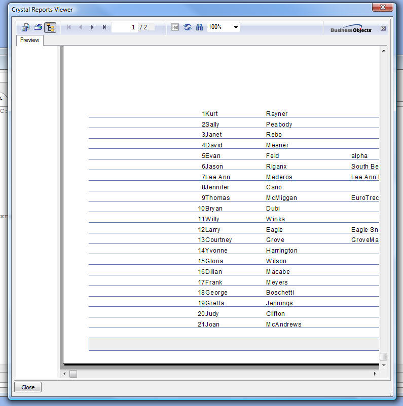

Using Crystal Reports with Alpha Anywhere
Some users have expressed an interest in incorporating Crystal Reports into an Alpha Anywhere application.
NOTE: In order to run these examples you must have the Crystal Reports activex objects installed and registered. These activex objects are automatically installed if you install the Crystal Reports trial version.
When you save a report in the Crystal Reports designer, the file you save has a .rpt extension. The saved report file can include a snapshot of the data. If so, then it is not necessary to connect to the original data source to print the report (because the data is already present in the .rpt file).
Alternatively, you can reconnect to your data source at print time and refresh the data used in the report. Two examples are shown below. In the first we simply print preview the report using the saved data that is stored in the report.
This example prints a sample Crystal Report file that ships with Crystal Reports.
Since the .rpt file contains saved data we do not need to connect to the data source.
dim app as OLE::crystaldesignruntime.application
fn = "C:\Program Files (x86)\Business Objects\Crystal Reports 11\Samples\en\Reports\General Business\employee sales.rpt"
Report = app.openReport(fn)
dim Crystal as p
dim Crystal.object as p
dim Crystal.class as c = "crystalreports.activexreportviewer"
Crystal.events=<<%code%
%code%
dlgEvents=<<%code%
IF a_dlg_button="init" THEN
crystal.object.reportsource = Report
crystal.object.viewreport()
crystal.object.displaytoolbar = 1
crystal.object.zoom(1)
END IF
IF a_dlg_button="Close" THEN
ui_modeless_dlg_close(dlgTitle)
END IF
%code%
dlgTitle="Crystal Reports Viewer"
dlgText=<<%dlg%
{can_exit=Close}
{startup=init}
{stretch=width,height}
{activex=100,55 Crystal};
{stickto=left,bottom}
<Close>
%dlg%
ui_modeless_dlg_box(dlgTitle,dlgText,dlgEvents)When you run this script you will see this Xdialog window which contains the Crystal Reports report viewer control:

This next example runs a report that was built against the sample Alphasports.mdb file that ships with
Alpha Anywhere (see the MDBFiles folder in the A5V10 program folder). This script connects to the alphasports.mdb file and refreshes the data before the report is printed.
NOTE: You can download this sample report from this location:
http://downloads.alphasoftware.com/A5V10Download/report1.zip
dim app as OLE::crystaldesignruntime.application
fn = "c:\crystalReports\report1.rpt"
Report = app.openReport(fn)
Report.discardsaveddata()
DIM cn as P
dim rs as P
cn = ole.create("adodb.connection")
rs = ole.create("adodb.recordset")
rs.locktype = 3
rs.cursortype = 1
rs.cursorlocation = 1
'Open the connection
cn.open("Provider=Microsoft.Jet.OLEDB.4.0;Data Source=C:\Program Files\a5V10\MDBFiles\Alphasports.mdb;Persist Security Info=False")
'Open the Record Set
rs.open("select * from customer",cn)
'Get a pointer to the Fields collection
Report.database.setDatasource(rs )
report.readRecords()
rs.close()
cn.close()
dim Crystal as p
dim Crystal.object as p
dim Crystal.class as c = "crystalreports.activexreportviewer"
Crystal.events=<<%code%
%code%
dlgEvents=<<%code%
IF a_dlg_button="init" THEN
crystal.object.reportsource = Report
crystal.object.viewreport()
crystal.object.displaytoolbar = 1
crystal.object.zoom(1)
END IF
IF a_dlg_button="Close" THEN
ui_modeless_dlg_close(dlgTitle)
END IF
%code%
dlgTitle="Crystal Reports Viewer"
dlgText=<<%dlg%
{can_exit=Close}
{startup=init}
{stretch=width,height}
{activex=100,55 Crystal};
{stickto=left,bottom}
<Close>
%dlg%
ui_modeless_dlg_box(dlgTitle,dlgText,dlgEvents)When you run this script, you will see the following Xdialog window with the embedded Crystal Reports Viewer:
